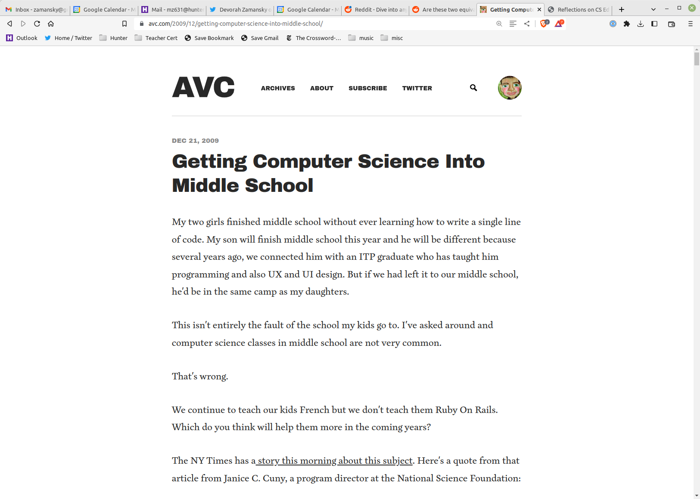

Influence without influence
Mike Zamansky
zamansky@gmail.com
@zamansky
cestlaz.github.io
Hi
- Mike Zamansky
- zamansky@gmail.com
- @zamansky
- cestlaz.github.io
NYU BPA and Goldman
From the street to the school
- left Goldman
- Did some consulting
- Figured on trying the teaching thing
- started at Seward
Stuy
- Excessed from Seward
- Teaching Math at Stuy
- Finally CS
- Geometry sucks
The plan goes awry
- Richie dies
An epiphany
- Hacked the school - from an idea to a requirement
- tried to push with DOE
- Tried to push at Stuy
The change


- establishing a name in Tech
Movin on up
- hunter
- my journey
- soft eng -> seward -> Stuy
- seward (math teacher some CS)
- Stuy math, then CS, plan for AP Math then Richie passed away
- created intro course
- struggles with Stuy (hack the school)
- struggles with DOE
- establishing a name for myself
- how this led to Hunter
- How things went from there
- takeaways